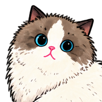

AGENT MISSION / 02
新指令来了，旧任务还该继续吗？
补给单已经发出，用户中途改了目的地。跟着字幕决定怎么派单，再判断迟到的签收算不算数。
SUPPLY MAP当前目标 · 07 号站
原单在途

用户字幕 · 臭臭「先送到 07 号站。」
- 07 原单 · SUP-07
- 等待回执
- 08 新单 · SUP-08
- 未派单
07 原单已经发出。继续看用户怎么说。
本轮操作
EVENT LOG- 07 原单发出 · 等待签收
固定字幕和模拟回执，不会使用麦克风、调用模型或实际派单。记录只保留在本页，重新挑战或刷新会清空；只有主动带回或复制时才会离开这里。